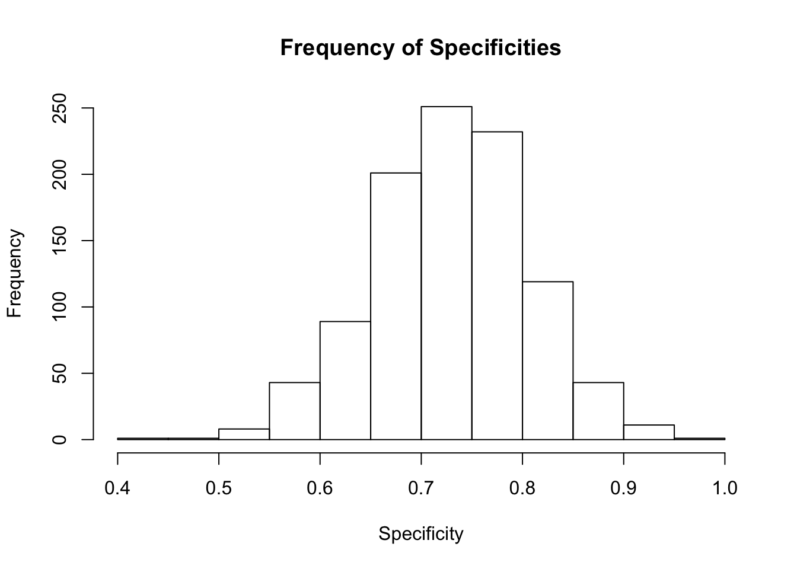
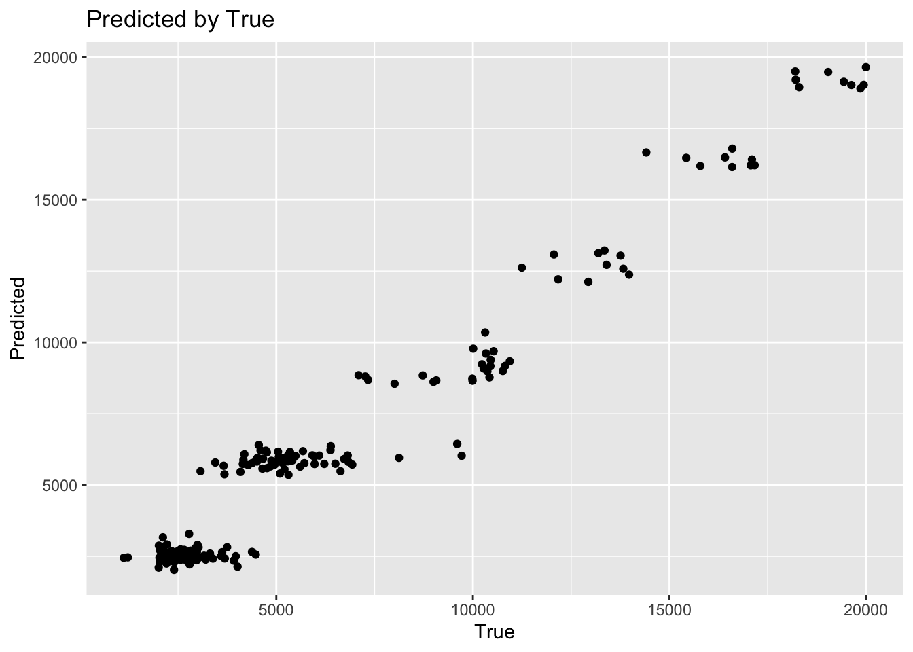
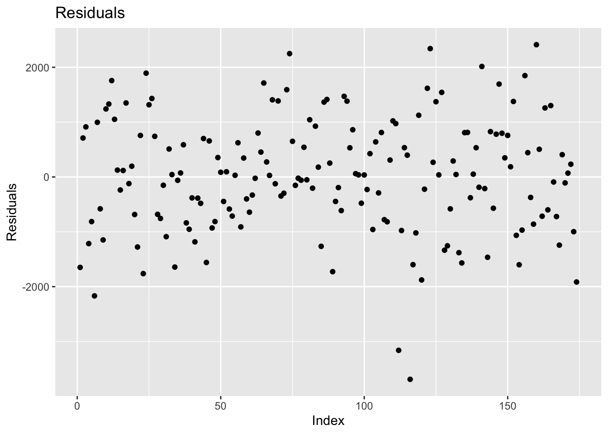

Final Youtube Link: https://www.youtube.com/watch?v=2BOSQ9OV5js&feature=youtu.be
The purpose of this document is to build models to predict employee attrition and employee salary for the client Frito Lay.
First below the training data is opened and organized for various use cases in later models.
library(tidyverse)
library(GGally)
library(fastDummies)
library(caret)
library(e1071)
library(class)
train = read_csv("CaseStudy2-data.csv")## Parsed with column specification:
## cols(
## .default = col_double(),
## Attrition = col_character(),
## BusinessTravel = col_character(),
## Department = col_character(),
## EducationField = col_character(),
## Gender = col_character(),
## JobRole = col_character(),
## MaritalStatus = col_character(),
## Over18 = col_character(),
## OverTime = col_character()
## )## See spec(...) for full column specifications.nosalaryTest = read_csv("CaseStudy2CompSet No Salary.csv")## Parsed with column specification:
## cols(
## .default = col_double(),
## Attrition = col_character(),
## BusinessTravel = col_character(),
## Department = col_character(),
## EducationField = col_character(),
## Gender = col_character(),
## JobRole = col_character(),
## MaritalStatus = col_character(),
## Over18 = col_character(),
## OverTime = col_character()
## )
## See spec(...) for full column specifications.noattritionTest = read.csv("CaseStudy2CompSet No Attrition.csv")
#Splitting the Data into 80/20 to train and test the model
#Coding character variables as 0 or 1 and removing them from ds.
#This data set can be used if we need numeric variables for everything
trainCoded = dummy_cols(train, select_columns = c( "Attrition", "BusinessTravel", "Department", "EducationField", "Gender", "JobRole", "MaritalStatus", "Over18", "OverTime"), remove_first_dummy = TRUE)
trainCodedNoChar = trainCoded
#Attrition Model Data
attritionFullTrain = train %>% mutate(logMonthlyIncome = log(MonthlyIncome),
ZMonthlyIncome = ((mean(MonthlyIncome)-MonthlyIncome)/sd(MonthlyIncome)),
ZDailyRate = ((mean(DailyRate) - DailyRate)/sd(DailyRate)),
ZMonthlyRate = ((mean(MonthlyRate)-MonthlyRate)/sd(MonthlyRate)))
cols = c("BusinessTravel", "Department", "EducationField", "OverTime", "MaritalStatus")
attritionFullTrain[cols] <- lapply(attritionFullTrain[cols], as.factor) Below we are building a full model and reduced model built by Step Wise variable selection. This is using the data frame with only numeric variables, including all character variables dummy coded as 0 or 1 indicators. This allows us to build a faux linear regression model and use step wise variable selection. As shown by the summary this gives us a list of variables now assigned to the stepCols variable.
#Building a Faux Linear Model for Attrition,
library(MASS)
#full.model <- lm(Attrition_Yes ~., data = trainCodedNoChar )
#Stepwise Var Selection
#step.model <- stepAIC(full.model, direction = "both", trace = FALSE)
summary(step.model)##
## Call:
## lm(formula = Attrition_Yes ~ Age + DistanceFromHome + EnvironmentSatisfaction +
## JobInvolvement + JobSatisfaction + NumCompaniesWorked + RelationshipSatisfaction +
## TotalWorkingYears + TrainingTimesLastYear + WorkLifeBalance +
## YearsInCurrentRole + YearsSinceLastPromotion + BusinessTravel_Travel_Frequently +
## `EducationField_Technical Degree` + `EducationField_Human Resources` +
## `JobRole_Manufacturing Director` + `JobRole_Sales Representative` +
## MaritalStatus_Single + MaritalStatus_Married + OverTime_Yes,
## data = trainCodedNoChar)
##
## Residuals:
## Min 1Q Median 3Q Max
## -0.58111 -0.19619 -0.07922 0.08110 1.11762
##
## Coefficients:
## Estimate Std. Error t value Pr(>|t|)
## (Intercept) 0.752041 0.098716 7.618 6.86e-14
## Age -0.003028 0.001637 -1.849 0.06474
## DistanceFromHome 0.003970 0.001341 2.960 0.00316
## EnvironmentSatisfaction -0.027271 0.009905 -2.753 0.00603
## JobInvolvement -0.086342 0.015421 -5.599 2.91e-08
## JobSatisfaction -0.044257 0.009776 -4.527 6.83e-06
## NumCompaniesWorked 0.019061 0.004717 4.041 5.80e-05
## RelationshipSatisfaction -0.022522 0.009867 -2.283 0.02270
## TotalWorkingYears -0.006421 0.002273 -2.825 0.00484
## TrainingTimesLastYear -0.016616 0.008543 -1.945 0.05210
## WorkLifeBalance -0.043621 0.015275 -2.856 0.00440
## YearsInCurrentRole -0.008482 0.003910 -2.169 0.03036
## YearsSinceLastPromotion 0.016622 0.004249 3.912 9.89e-05
## BusinessTravel_Travel_Frequently 0.060038 0.028420 2.112 0.03494
## `EducationField_Technical Degree` 0.066749 0.038607 1.729 0.08418
## `EducationField_Human Resources` 0.179016 0.083442 2.145 0.03220
## `JobRole_Manufacturing Director` -0.090882 0.036597 -2.483 0.01321
## `JobRole_Sales Representative` 0.209792 0.047029 4.461 9.26e-06
## MaritalStatus_Single 0.153928 0.030478 5.050 5.40e-07
## MaritalStatus_Married 0.060218 0.028028 2.148 0.03196
## OverTime_Yes 0.208945 0.023931 8.731 < 2e-16
##
## (Intercept) ***
## Age .
## DistanceFromHome **
## EnvironmentSatisfaction **
## JobInvolvement ***
## JobSatisfaction ***
## NumCompaniesWorked ***
## RelationshipSatisfaction *
## TotalWorkingYears **
## TrainingTimesLastYear .
## WorkLifeBalance **
## YearsInCurrentRole *
## YearsSinceLastPromotion ***
## BusinessTravel_Travel_Frequently *
## `EducationField_Technical Degree` .
## `EducationField_Human Resources` *
## `JobRole_Manufacturing Director` *
## `JobRole_Sales Representative` ***
## MaritalStatus_Single ***
## MaritalStatus_Married *
## OverTime_Yes ***
## ---
## Signif. codes: 0 '***' 0.001 '**' 0.01 '*' 0.05 '.' 0.1 ' ' 1
##
## Residual standard error: 0.3168 on 849 degrees of freedom
## Multiple R-squared: 0.2747, Adjusted R-squared: 0.2577
## F-statistic: 16.08 on 20 and 849 DF, p-value: < 2.2e-16stepCols = c("Age", "DistanceFromHome", "EnvironmentSatisfaction", "JobInvolvement", "JobSatisfaction",
"NumCompaniesWorked", "RelationshipSatisfaction", "TotalWorkingYears", "TrainingTimesLastYear",
"WorkLifeBalance","YearsInCurrentRole", "YearsSinceLastPromotion", "BusinessTravel",
"EducationField", "JobRole", "MaritalStatus","OverTime") With the step wise selected columns we can build and test various models to determine if any variables are superfluous. After iteration and exploration we have the stepCols1 variable with a tested set of useful variables.
percentage = .8
indices = sample(seq(1:dim(attritionFullTrain)[1]), round(dim(attritionFullTrain)[1]*percentage))
attritionSplitTrain = attritionFullTrain[indices,]
attritionSplitTest = attritionFullTrain[-indices,]
#Test each version of the stepCols
maxspec = 0
removeCol = ""
for(i in stepCols){
newcols = stepCols
fitAttrition = naiveBayes(attritionSplitTrain[,newcols], as.factor(attritionSplitTrain$Attrition), laplace = 1, data = attritionSplitTrain)
attritionPredict = predict(fitAttrition, attritionSplitTest[,newcols])
cm = confusionMatrix(table(attritionPredict, attritionSplitTest$Attrition ))
spec = cm$byClass[2]
if(spec > maxspec){
maxspec = spec
removeCol = i
}
}
#With Trial and Error below is a good list to work within
stepCols1 = c("Age", "EnvironmentSatisfaction", "JobInvolvement", "JobSatisfaction",
"NumCompaniesWorked", "RelationshipSatisfaction", "TotalWorkingYears",
"WorkLifeBalance","YearsInCurrentRole", "YearsSinceLastPromotion", "BusinessTravel",
"JobRole", "MaritalStatus","OverTime", "logMonthlyIncome") Through exploratory analysis, KNN models were consistently limited due to the high number of employees who had not left. To combat this we built a model trained on a 50/50 split of employees having left and stayed with the company.
library(class)
#Balanced KNN Model
trueYes = attritionFullTrain %>% filter(Attrition == "Yes")
trueNo = attritionFullTrain %>% filter(Attrition == "No")
indicesNo = sample(seq(1:dim(trueNo)[1]), round(dim(trueYes)[1]))
trueNoSample = trueNo[indicesNo,]
balancedTotal = rbind(trueYes, trueNoSample)
percentage = .8
indices = sample(seq(1:dim(balancedTotal)[1]), round(dim(balancedTotal)[1]*percentage))
balancedSplitTrain = balancedTotal[indices,]
balancedSplitTest = balancedTotal[-indices,]
#step based cols w/out char
knnColsStep = c("Age", "EnvironmentSatisfaction", "JobInvolvement", "JobSatisfaction",
"NumCompaniesWorked", "RelationshipSatisfaction", "TotalWorkingYears",
"WorkLifeBalance","YearsInCurrentRole", "YearsSinceLastPromotion","logMonthlyIncome")
#Balanced KNN predict based on limited data set.
Balanceknnpredict = knn(balancedSplitTrain[,knnColsStep], attritionSplitTest[,knnColsStep], balancedSplitTrain$Attrition, k = 5)Below is both the Knn and Naive Bayes model in an ensemble model. After some testing including a simpler third KNN model, it was determined even combined an ensemble model was still returning low specificty with high sensitivity. To balance this, rather than have multiple models vote, the current ensemble model combines two good models of Naive Bayes and KNN and categorizes a prediction of Attrition as Yes if either of the two models categorizes it as Yes.
This weighting is overestimating whether an employee leaves or not, at a cost to the sensitivity. However this results in a much more even combination of sensitivity and specificity with both measures often reaching .75 depending on the random sample.
To test the reliability of this model, below it is run 1000 times with random sampling to ensure that the algorithm is not overfitted to a particular sample and reliably returns acceptable specificity and sensitivity rates.
library(class)
sens = list()
spec = list()
for(j in seq(1:1000)){
percentage = .8
indices = sample(seq(1:dim(attritionFullTrain)[1]), round(dim(attritionFullTrain)[1]*percentage))
attritionSplitTrain = attritionFullTrain[indices,]
attritionSplitTest = attritionFullTrain[-indices,]
stepCols1 = c("Age", "EnvironmentSatisfaction", "JobInvolvement", "JobSatisfaction",
"NumCompaniesWorked", "RelationshipSatisfaction", "TotalWorkingYears",
"WorkLifeBalance","YearsInCurrentRole", "YearsSinceLastPromotion", "BusinessTravel",
"JobRole", "MaritalStatus","OverTime", "logMonthlyIncome")
fitAttrition = naiveBayes(attritionSplitTrain[,stepCols1], as.factor(attritionSplitTrain$Attrition), laplace = 1, data = attritionSplitTrain)
attritionPredict = predict(fitAttrition, attritionSplitTest[,stepCols1])
#confusionMatrix(table(attritionPredict, attritionSplitTest$Attrition ))
#Balanced KNN Model
trueYes = attritionFullTrain %>% filter(Attrition == "Yes")
trueNo = attritionFullTrain %>% filter(Attrition == "No")
indicesNo = sample(seq(1:dim(trueNo)[1]), round(dim(trueYes)[1]))
trueNoSample = trueNo[indicesNo,]
balancedTotal = rbind(trueYes, trueNoSample)
percentage = .8
indices = sample(seq(1:dim(balancedTotal)[1]), round(dim(balancedTotal)[1]*percentage))
balancedSplitTrain = balancedTotal[indices,]
balancedSplitTest = balancedTotal[-indices,]
#step based cols w/out char
knnColsStep = c("Age", "EnvironmentSatisfaction", "JobInvolvement", "JobSatisfaction",
"NumCompaniesWorked", "RelationshipSatisfaction", "TotalWorkingYears",
"WorkLifeBalance","YearsInCurrentRole", "YearsSinceLastPromotion","logMonthlyIncome")
#Balanced KNN predict based on limited data set.
Balanceknnpredict = knn(balancedSplitTrain[,knnColsStep], attritionSplitTest[,knnColsStep], balancedSplitTrain$Attrition, k = 5)
#confusionMatrix(table(Balanceknnpredict,attritionSplitTest$Attrition))
ensembleDF = data.frame(NB = attritionPredict, KNN = Balanceknnpredict)
for(i in seq(1:dim(ensembleDF)[1])){
score = 0
if(ensembleDF[i,1] == "Yes" | ensembleDF[i,2] == "Yes"){
ensembleDF$ensemblePredictions[i] = "Yes"
}
else{ensembleDF$ensemblePredictions[i] = "No"}
}
table(ensembleDF$ensemblePredictions,attritionSplitTest$Attrition)
cm = confusionMatrix(table(ensembleDF$ensemblePredictions,attritionSplitTest$Attrition))
sens[j] = unname(cm$byClass[1], force = TRUE)
#print(cm$byClass[1])
spec[j] = cm$byClass[2]
}
hist(unlist(sens), main = "Frequency of Sensitivities", xlab = "Sensitivity")hist(unlist(spec), main = "Frequency of Specificities", xlab = "Specificity")
With the correlation plot we can see some early useful variables with high correlation and build those into our salary prediction model.
#Correlation Plot for All variables coded.
ggcorr(trainCodedNoChar, method = c("pairwise", "pearson"), size = 2, hjust = 1 , legend.position = "bottom")## Warning in ggcorr(trainCodedNoChar, method = c("pairwise", "pearson"),
## size = 2, : data in column(s) 'Attrition', 'BusinessTravel', 'Department',
## 'EducationField', 'Gender', 'JobRole', 'MaritalStatus', 'Over18',
## 'OverTime' are not numeric and were ignored## Warning in cor(data, use = method[1], method = method[2]): the standard
## deviation is zero#Corr Variables for Salary
cor(train$MonthlyIncome, train$TotalWorkingYears)## [1] 0.7785112#.778
cor(train$MonthlyIncome, train$NumCompaniesWorked)## [1] 0.1558943#.156
cor(train$MonthlyIncome, train$YearsAtCompany)## [1] 0.491379#.49
cor(train$MonthlyIncome, train$Age)## [1] 0.4842883#.48
cor(train$MonthlyIncome, train$JobLevel)## [1] 0.95164#.95TotalWorkingYears is the most correlated variable, but has a lot of the same information as Age, Years and YearsAtCompany. Below we look to see if adding those variables in helps our RMSE or if one is a better indicator alone.
#Splitting the Data into 80/20 to train and test the model
percentage = .8
indices = sample(seq(1:dim(train)[1]), round(dim(train)[1]*percentage))
splitTrain = train[indices,]
splitTest = train[-indices,]
#Cross Validating
#Model 1 with Total Working Years
fitSalary1 = lm(MonthlyIncome ~ TotalWorkingYears + Age + JobLevel + JobRole , splitTrain)
predictSalary1 = predict(fitSalary1, splitTest)
model1CV = data.frame(R2 = R2(predictSalary1, splitTest$MonthlyIncome), RMSE = RMSE(predictSalary1, splitTest$MonthlyIncome), MAE = MAE(predictSalary1, splitTest$MonthlyIncome))
#Model 2 with Years at Company
fitSalary2 = lm(MonthlyIncome ~ YearsAtCompany + JobLevel + JobRole , splitTrain)
predictSalary2 = predict(fitSalary2, splitTest)
model2CV = data.frame(R2 = R2(predictSalary2, splitTest$MonthlyIncome), RMSE = RMSE(predictSalary2, splitTest$MonthlyIncome), MAE = MAE(predictSalary2, splitTest$MonthlyIncome))
#Model 3 with Age
fitSalary3 = lm(MonthlyIncome ~ Age + JobLevel + JobRole , splitTrain)
predictSalary3 = predict(fitSalary3, splitTest)
model3CV = data.frame(R2 = R2(predictSalary3, splitTest$MonthlyIncome), RMSE = RMSE(predictSalary3, splitTest$MonthlyIncome), MAE = MAE(predictSalary3, splitTest$MonthlyIncome))
#As goal is prediction, lets check combonation
fitSalary4 = lm(MonthlyIncome ~ TotalWorkingYears + YearsAtCompany + Age + JobLevel + JobRole, splitTrain)
predictSalary4 = predict(fitSalary4, splitTest)
model4CV = data.frame(R2 = R2(predictSalary4, splitTest$MonthlyIncome), RMSE = RMSE(predictSalary3, splitTest$MonthlyIncome), MAE = MAE(predictSalary3, splitTest$MonthlyIncome))
model1CV## R2 RMSE MAE
## 1 0.9472913 1046.235 769.8379model2CV## R2 RMSE MAE
## 1 0.9499815 1018.837 751.8155model3CV## R2 RMSE MAE
## 1 0.9502553 1016.694 749.6336model4CV## R2 RMSE MAE
## 1 0.9471851 1016.694 749.6336We can take a visual look at how good our model is at predicting salary currently with the visualizations below.
fitSalaryfinal = lm(MonthlyIncome ~ TotalWorkingYears + Age + JobLevel + JobRole + JobSatisfaction + MonthlyRate + Gender, splitTrain)
predictSalaryfinal = predict(fitSalaryfinal, splitTest)
modelCV = data.frame(R2 = R2(predictSalaryfinal, splitTest$MonthlyIncome), RMSE = RMSE(predictSalaryfinal, splitTest$MonthlyIncome), MAE = MAE(predictSalaryfinal, splitTest$MonthlyIncome))
modelDF = data.frame(Predicted = predictSalaryfinal, True = splitTest$MonthlyIncome, Residuals = (predictSalaryfinal-splitTest$MonthlyIncome), Index = seq(1:dim(splitTest)[1]))
modelDF %>% ggplot(aes(x = True, y = Predicted)) + geom_point() + ggtitle("Predicted by True")
modelDF %>% ggplot(aes(x = Index,y = Residuals)) + geom_point() + ggtitle("Residuals")
nosalaryTest = read_csv("CaseStudy2CompSet No Salary.csv")## Parsed with column specification:
## cols(
## .default = col_double(),
## Attrition = col_character(),
## BusinessTravel = col_character(),
## Department = col_character(),
## EducationField = col_character(),
## Gender = col_character(),
## JobRole = col_character(),
## MaritalStatus = col_character(),
## Over18 = col_character(),
## OverTime = col_character()
## )## See spec(...) for full column specifications.noattritionTest = read.csv("CaseStudy2CompSet No Attrition.csv")
noattritionTest = noattritionTest %>% mutate(logMonthlyIncome = log(MonthlyIncome))
SalaryFitPrediction = lm(MonthlyIncome ~ TotalWorkingYears + Age + JobLevel + JobRole + JobSatisfaction + MonthlyRate + Gender, train)
predictSalaryfinal = predict(SalaryFitPrediction, nosalaryTest)
SalaryPredictions = data.frame(ID = nosalaryTest$ID, MonthlyIncome = predictSalaryfinal)
SalaryPredictions %>% ggplot(aes(y = MonthlyIncome)) + geom_boxplot() + ggtitle("Distribution of Salary Predictions") + ylab("Monthly Income")#Need to show summarys of predicted data
fitAttrition = naiveBayes(attritionFullTrain[,stepCols1], as.factor(attritionFullTrain$Attrition), laplace = 1, data = attritionFullTrain)
NBPrediction = predict(fitAttrition, noattritionTest[,stepCols1])
#Balanced KNN Model
trueYes = attritionFullTrain %>% filter(Attrition == "Yes")
trueNo = attritionFullTrain %>% filter(Attrition == "No")
indicesNo = sample(seq(1:dim(trueNo)[1]), round(dim(trueYes)[1]))
trueNoSample = trueNo[indicesNo,]
balancedTotal = rbind(trueYes, trueNoSample)
knnColsStep = c("Age", "EnvironmentSatisfaction", "JobInvolvement", "JobSatisfaction",
"NumCompaniesWorked", "RelationshipSatisfaction", "TotalWorkingYears",
"WorkLifeBalance","YearsInCurrentRole", "YearsSinceLastPromotion","logMonthlyIncome")
#Balanced KNN predict based on limited data set.
KnnPrediction = knn(balancedTotal[,knnColsStep], noattritionTest[,knnColsStep], balancedTotal$Attrition, k = 5)
ensembleDF = data.frame(NB = NBPrediction, KNN = KnnPrediction)
for(i in seq(1:dim(ensembleDF)[1])){
score = 0
if(ensembleDF[i,1] == "Yes" | ensembleDF[i,2] == "Yes"){
ensembleDF$ensemblePredictions[i] = "Yes"
}
else{ensembleDF$ensemblePredictions[i] = "No"}
}
table(ensembleDF$ensemblePredictions)##
## No Yes
## 186 114